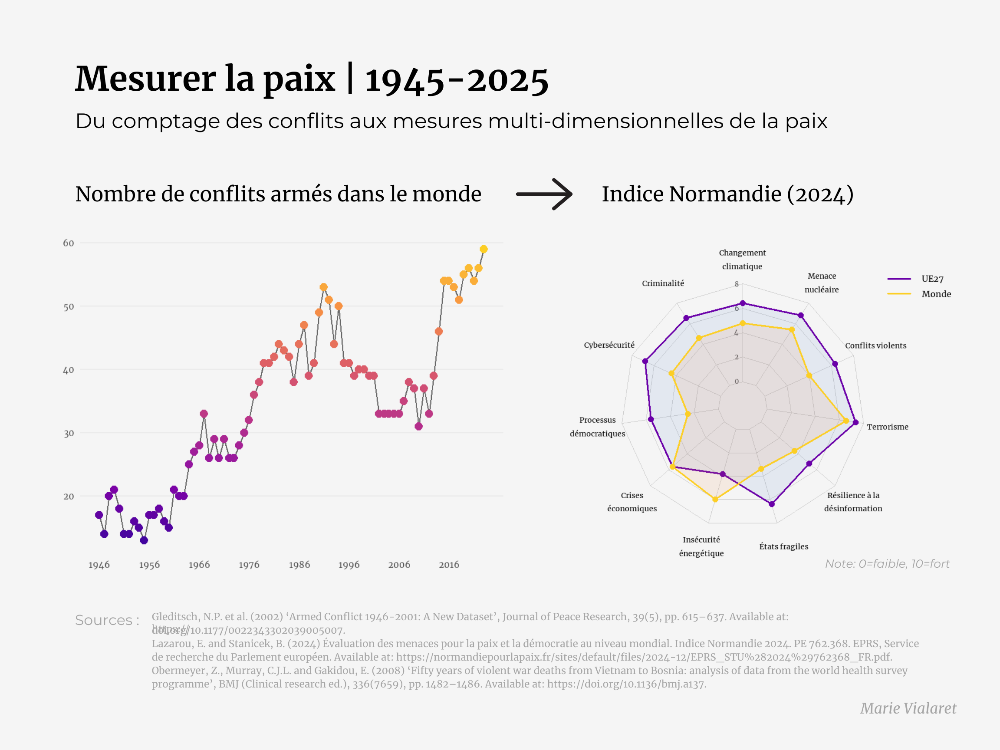

La paix, c'est l'absence de guerre ?
08 mai 2025
Pendant longtemps, mesurer la paix, c'était simplement compter les conflits entre États. Depuis, la mesure de la paix a évolué vers des indices multidimensionnels intégrant sécurité, stabilité politique, bien-être et perception des menaces.
A l'occasion du 8 mai qui célebre la fin de la Seconde Guerre Mondiale, retour sur 5 métriques qui ont transformé notre façon de penser la paix.

#1. Le nombre de conflits armés internationaux
Après 1945, la paix était principalement mesurée par l'absence de guerre entre États.
📊 En 1946, le monde comptait plus de 20 conflits armés majeurs ; en 2023, ce chiffre est tombé à moins de 10 conflits interétatiques majeurs, mais les conflits internes ont augmenté.
#2. Le taux de décès liés aux conflits
Une mesure brute mais essentielle : celle du coût humain.
📊 Une mesure qui fait de la Seconde Guerre du Congo le conflit le plus meurtrier depuis 1945 : 5,4 millions de mort·es sur une population d'environ 50 millions, soit un taux de décès d'environ 10,8 %.
#3. Le nombre de réfugié·es et personnes déplacées
La paix se mesure aussi par ses absences : de foyer, de sécurité, de futur.
📊 En 2023, plus de 110 millions de personnes étaient déplacées de force dans le monde, un record historique.
#4. L'indice mondial de la paix (Global Peace Index)
Créé en 2007, il agrège 23 indicateurs (sécurité, conflits, militarisation…).
📊 En 2024, l'Islande est classée pays le plus pacifique avec un score GPI de 1,124, tandis que l'Afghanistan est le moins pacifique avec un score de 3,448.
#5. L'indice Normandie
Un indice européen mis en place en 2019 qui mesure les menaces à la paix sur 11 dimensions : instabilité politique, criminalité, sécurité énergétique…
📊 En 2019, l'UE affichait un score moyen de 8/10 = faible exposition aux risques majeurs.
Mesurer la paix, ce n'est pas figer un idéal.
C'est mieux comprendre ses fragilités, ses leviers, ses angles morts.
C'est reconnaître que la paix se construit, se défend, s'améliore.
Vous aimez les stats qui déconstruisent les idées reçues ?
Abonnez-vous ma liste de diffusion en cliquant sur le bouton ci-dessous ↓
Je m'appelle Marie Vialaret. Je suis présidente de l'association tpà et conférencière sur les questions d'égalité de genre. Statisticienne de formation, je suis consultante indépendante en analyse de données.
Diplômée de la Toulouse School of Economics, j'ai ensuite étudié les statistiques appliquées à l'ENSAE ParisTech.